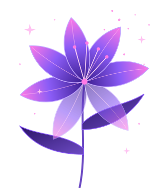

SafePoint
SafePoint


Ficha
Oi, eu sou a Camily
Aquela menina que cresceu rodeada de primos e de um irmão. Desde pequena eu amo jogar, mas sempre ficava de canto por ser menina, e quando jogava era sempre single player. Os amigos que eu tinha não jogavam, não liam e muito menos faziam algum artesanato. Então recorri ao Discord, mas, resumindo, não foi uma aventura feliz, que me deixou algumas marcas até hoje.
Hoje sou estudante de Análise e Desenvolvimento de Sistemas, e o SafePoint é o meu projeto individual. A ideia nasceu dessas situações que vivi por grande parte da vida e que sei que muitas mulheres também vivem: entrar em um servidor de Discord para jogar ou conversar e encontrar um ambiente tóxico.
Adoro jogar de tudo, fazer qualquer tipo de artesanato e ler, principalmente fantasia e poesia. Sou apaixonada por animais, cinéfila que maratona de tudo e, acima de tudo, amo compartilhar esses momentos com outras mulheres.
Como toda mulher, eu também sou forte e, por mais que eu tenha sofrido, continuei na procura de algum lugarzinho seguro e encontrei alguns.
✦ Eu queria que nenhuma outra menina precisasse descobrir esses lugares sozinha ♥
» player 1 · pronta para jogar
Por que o SafePoint
Não existe um lugar central onde mulheres possam consultar a experiência de outras antes de entrar em uma comunidade. O SafePoint junta essas opiniões em notas, rankings e gráficos.
Como foi feito
- HTML, CSS e JavaScript nas telas
- API em Node.js com Express
- Banco de dados MySQL
- Chart.js nos gráficos da dashboard
O que eu prometo
- Todo servidor indicado passa por moderação
- Seu e-mail nunca aparece nas páginas públicas
- Só mulheres maiores de 18 anos